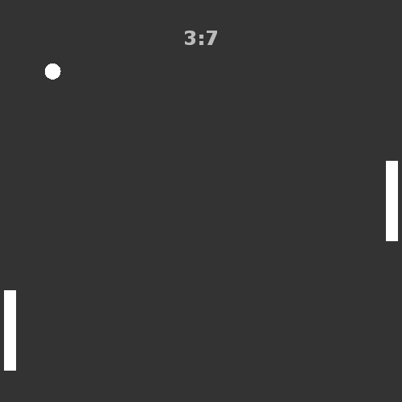

So far we have a working game-state system and controllable player platform. We can now add ball movement to the game and implement the win-loss system.
Ball movement in this case is different from platform movement. The ball has 2 properties - its movement vector and its movement speed. The vector is a simple object that holds 2 properties - x and y movements.
OpenFL provides a class called Point, which is suitable for storing 2d vector values.
Declare a new variable of the Point type:
private var ballMovement:Point;Add another integer variable for holding the movement speed value:
private var ballSpeed:Int;Set default values to these variables in the init() function:
ballSpeed = 7;
ballMovement = new Point(0, 0);Now let's take a look at our current setGameState() method, which is called whenever the game state is changed. When the state is set to Playing from Paused, we want to reset our ball's position to the center of the game screen, and randomize its movement vector.
For randomization we can use the standard built-in Math class. Generate a random angle, then using the sine and cosine functions calculate x and y movement of the ball.
private function setGameState(state:GameState):Void {
currentGameState = state;
updateScore();
if (state == Paused) {
messageField.alpha = 1;
}else {
messageField.alpha = 0;
platform1.y = 200;
platform2.y = 200;
ball.x = 250;
ball.y = 250;
var randomAngle:Float = Math.random() * 2 * Math.PI;
ballMovement.x = Math.cos(randomAngle) * ballSpeed;
ballMovement.y = Math.sin(randomAngle) * ballSpeed;
}
}
The next step is to actually make the ball move. We have the movement vector, so applying those to the Ball instance is as simple as incrementing its coordinate values. We can make the ball bounce off the edges of the screen using simple if statements. We can also check when the ball touches the right or left edges of the screen, which should signal a win for the human player or the bot.
This is where we will have to differentiate between the human player and the AI opponent, so let's create a new enum for this:
enum Player {
Human;
AI;
}Now update the ENTER_FRAME event handler, by adding ball movement and bounce behavior. When the ball reaches the left or right edges of the screen, call a winGame() function to end the game and pass either Human or AI as the parameter:
private function everyFrame(event:Event):Void {
if(currentGameState == Playing){
if (arrowKeyUp) {
platform1.y -= platformSpeed;
}
if (arrowKeyDown) {
platform1.y += platformSpeed;
}
if (platform1.y < 5) platform1.y = 5;
if (platform1.y > 395) platform1.y = 395;
ball.x += ballMovement.x;
ball.y += ballMovement.y;
if (ball.y < 5 || ball.y > 495) ballMovement.y *= -1;
if (ball.x < 5) winGame(AI);
if (ball.x > 495) winGame(Human);
}
}
The winGame() method simply increments the needed score value and resets the game state:
private function winGame(player:Player):Void {
if (player == Human) {
scorePlayer++;
} else {
scoreAI++;
}
setGameState(Paused);
}
If you test the game now, you'll see that the ball starts moving in a random direction after the game is started. It will also bounce off the top and bottom edges of the screen. When the ball reaches the left or right edges, the game ends and a score point is added to either the human's or the AI's score.
Full Main.hx class code now looks like this:
package ;
import openfl.display.Sprite;
import openfl.events.Event;
import openfl.Lib;
import openfl.events.KeyboardEvent;
import openfl.geom.Point;
import openfl.text.TextField;
import openfl.text.TextFormat;
import openfl.text.TextFormatAlign;
enum GameState {
Paused;
Playing;
}
enum Player {
Human;
AI;
}
class Main extends Sprite
{
var inited:Bool;
private var platform1:Platform;
private var platform2:Platform;
private var ball:Ball;
private var scorePlayer:Int;
private var scoreAI:Int;
private var scoreField:TextField;
private var messageField:TextField;
private var currentGameState:GameState;
private var arrowKeyUp:Bool;
private var arrowKeyDown:Bool;
private var platformSpeed:Int;
private var ballMovement:Point;
private var ballSpeed:Int;
/* ENTRY POINT */
function resize(e)
{
if (!inited) init();
// else (resize or orientation change)
}
function init()
{
if (inited) return;
inited = true;
platform1 = new Platform();
platform1.x = 5;
platform1.y = 200;
this.addChild(platform1);
platform2 = new Platform();
platform2.x = 480;
platform2.y = 200;
this.addChild(platform2);
ball = new Ball();
ball.x = 250;
ball.y = 250;
this.addChild(ball);
var scoreFormat:TextFormat = new TextFormat("Verdana", 24, 0xbbbbbb, true);
scoreFormat.align = TextFormatAlign.CENTER;
scoreField = new TextField();
addChild(scoreField);
scoreField.width = 500;
scoreField.y = 30;
scoreField.defaultTextFormat = scoreFormat;
scoreField.selectable = false;
var messageFormat:TextFormat = new TextFormat("Verdana", 18, 0xbbbbbb, true);
messageFormat.align = TextFormatAlign.CENTER;
messageField = new TextField();
addChild(messageField);
messageField.width = 500;
messageField.y = 450;
messageField.defaultTextFormat = messageFormat;
messageField.selectable = false;
messageField.text = "Press SPACE to start\nUse ARROW KEYS to move your platform";
scorePlayer = 0;
scoreAI = 0;
arrowKeyUp = false;
arrowKeyDown = false;
platformSpeed = 7;
ballSpeed = 7;
ballMovement = new Point(0, 0);
setGameState(Paused);
stage.addEventListener(KeyboardEvent.KEY_DOWN, keyDown);
stage.addEventListener(KeyboardEvent.KEY_UP, keyUp);
this.addEventListener(Event.ENTER_FRAME, everyFrame);
}
private function setGameState(state:GameState):Void {
currentGameState = state;
updateScore();
if (state == Paused) {
messageField.alpha = 1;
}else {
messageField.alpha = 0;
platform1.y = 200;
platform2.y = 200;
ball.x = 250;
ball.y = 250;
var randomAngle:Float = Math.random() * 2 * Math.PI;
ballMovement.x = Math.cos(randomAngle) * ballSpeed;
ballMovement.y = Math.sin(randomAngle) * ballSpeed;
}
}
private function keyDown(event:KeyboardEvent):Void {
if (currentGameState == Paused && event.keyCode == 32) { // Space
setGameState(Playing);
}else if (event.keyCode == 38) { // Up
arrowKeyUp = true;
}else if (event.keyCode == 40) { // Down
arrowKeyDown = true;
}
}
private function keyUp(event:KeyboardEvent):Void {
if (event.keyCode == 38) { // Up
arrowKeyUp = false;
}else if (event.keyCode == 40) { // Down
arrowKeyDown = false;
}
}
private function everyFrame(event:Event):Void {
if(currentGameState == Playing){
if (arrowKeyUp) {
platform1.y -= platformSpeed;
}
if (arrowKeyDown) {
platform1.y += platformSpeed;
}
if (platform1.y < 5) platform1.y = 5;
if (platform1.y > 395) platform1.y = 395;
ball.x += ballMovement.x;
ball.y += ballMovement.y;
if (ball.y < 5 || ball.y > 495) ballMovement.y *= -1;
if (ball.x < 5) winGame(AI);
if (ball.x > 495) winGame(Human);
}
}
private function winGame(player:Player):Void {
if (player == Human) {
scorePlayer++;
} else {
scoreAI++;
}
setGameState(Paused);
}
private function updateScore():Void {
scoreField.text = scorePlayer + ":" + scoreAI;
}
/* SETUP */
public function new()
{
super();
addEventListener(Event.ADDED_TO_STAGE, added);
}
function added(e)
{
removeEventListener(Event.ADDED_TO_STAGE, added);
stage.addEventListener(Event.RESIZE, resize);
#if ios
haxe.Timer.delay(init, 100); // iOS 6
#else
init();
#end
}
public static function main()
{
// static entry point
Lib.current.stage.align = openfl.display.StageAlign.TOP_LEFT;
Lib.current.stage.scaleMode = openfl.display.StageScaleMode.NO_SCALE;
Lib.current.addChild(new Main());
//
}
}
Next time we will make the ball bounce off the platforms and also add AI platform movement.